Уведомления
После оценки оповещения отправляются получателям. Получатели вместе со связанными с ними конечными точками управляются из системного интерфейса.

Получатели связаны с одной и только одной конечной точкой, но одна и та же конечная точка может использоваться несколькими получателями.
Конечные точки и получатели имеют тип и набор параметров конфигурации, который зависит от типа. Все доступные конечные точки и получатели описаны в этот раздел.
Конечные точки содержат общую конфигурацию, которая затем расширяется за счет конфигурации получателей. Например, электронная почта конечная точка содержит адрес сервера SMTP, тогда как электронная почта получатели содержат адреса электронной почты назначения. Это позволяет создавать несколько электронная почта получатели, которые используют одну и ту же конечную точку и, следовательно, один и тот же адрес сервера SMTP.
Подробный пример можно увидеть на сайте https://www.ntop.org/ntopng/using-ntopng-recipients-and-endpoints-for-flexible-alert-handling/.
Встроенный
Встроенный База данных хранилища оповещений получатель вместе со встроенным База данных хранилища оповещений конечная точка всегда присутствует. Это используется для доставки оповещений во внутреннюю базу данных (SQLite или ClickHouse) и обеспечения к ним доступа внутри веб-интерфейса. Встроенная пара не влияет на задействованные оповещения и всегда отображается. Например, следующие оповещения отображаются в разделе Оповещения о потоке потому что они были доставлены встроенному получателю. Встроенного получателя нельзя изменить или удалить.

Критерии доставки
Каждого получателя можно настроить на получение оповещений на основе нескольких критериев:
Серьезность
Категория оповещения
Хост-пул
Теги
Критерии серьезности
Минимальная серьезность указывается при создании/редактировании получателя. Все оповещения, имеющие указанную (или более высокую) серьезность, будут доставлены получателю.

Проверить категорию
При создании/редактировании получателя можно указать несколько типов. Все оповещения, относящиеся к указанным типам, будут доставлены получателю.

Проверить объект
При создании/редактировании получателя можно указать несколько типов. Все оповещения, принадлежащие указанному субъекту, будут доставлены получателю.

Критерии пула хостов
Ни один пул хостов или несколько пулов хостов можно настроить для фильтрации оповещений, относящихся к хостам, включая оповещения потоков и хостов.
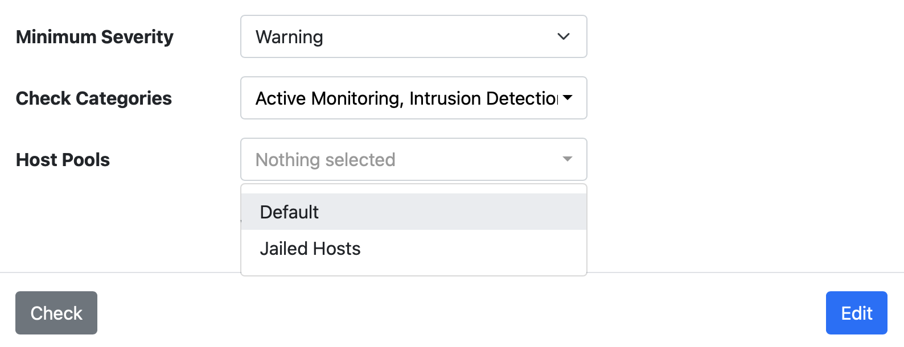
Активный мониторинг
Нельзя настроить ни одно или несколько предупреждений об активных отслеживаемых устройствах.

Проблемы с отправкой
В ntopng Enterprise XXL и выше, с проблемы включен, Отправлять вариант получатель имеет рядом с Оповещения, Проблемы элемент:
Оповещения: получатель получает все оповещения.
Проблемы: получатель получает уведомление, когда проблема открывается, эскалируется (ее серьезность повышена), повторно открыта или решена, вместо одного уведомления на каждое предупреждение. Когда то же самое проблема генерирует тысячи предупреждений, получатель уведомляется один раз.
Приведенные выше критерии доставки (серьезность, категория, сущность, пулы, теги) также применимы к проблемам. Серьезность проблемы — это наивысшая серьезность предупреждений: получатель с минимальной серьезностью может получить эскалацию проблемы, открытие которой было ниже этой серьезности. Подавленные проблемы не уведомлен.
Когда проблемы отключены, получатель, отправляющий проблемы, получает оповещения (Проблемы (отключено: оповещения отправляются)), и проблемы снова, когда они включены.
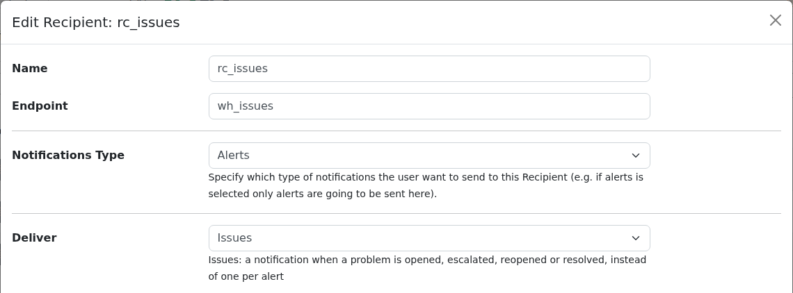
В уведомлении сообщается, что случилось с проблемой, какое предупреждение ее вызвало (если есть), количество оповещения и коллеги о проблеме, а также ссылку на подробности проблемы, например:
[Interface: eth0] [Severity: Notice] [Flow] [Unsafe Protocol] [192.168.1.58 (Attacker)] [Issue #3 Opened]
Insecure protocol used - Alerts: 1 since 28/10/2026 07:05:22 - Peers: 1 - Details: https://ntopng:3000/lua/pro/issue_details.lua?issue_id=3
Webhook и другие конечные точки JSON получают поля оповещений с "action": "issue" и issue
объект с issue_id, event (открыть, эскалировать, повторно открыть, решить), status, severity,
first_seen, last_seen, resolution, signal_count, peers_count, role и url.
В ссылке используется Адрес хоста предпочтение, если оно установлено.
Доступные конечные точки
Доступные на данный момент конечные точки и необходимые лицензии:
Сообщество |
Про |
Предприятие М |
Предприятие L/XL |
|
|---|---|---|---|---|
Раздор |
х |
х |
х |
х |
Elasticsearch |
х |
х |
х |
|
электронная почта |
х |
х |
х |
х |
Фэйл2Бан |
х |
х |
х |
|
самое важное |
х |
х |
х |
х |
МС команды |
х |
|||
ПейджерДьюти |
х |
|||
Сценарий оболочки |
х |
х |
х |
х |
Слабый |
х |
х |
х |
х |
Syslog |
х |
х |
х |
х |
Syslog checkmk |
х |
х |
||
Syslog КЭФ |
только размер XL |
|||
Telegram |
х |
х |
х |
х |
Вебхук |
х |
х |
х |
х |
Вичат |
х |
|||
Улей |
х |
х |
х |
Ниже приведено руководство по настройке каждой конечной точки/получателя.
Раздор
Дискорд (https://discord.com) — популярное приложение для совместной работы, которое ntopng может использовать для доставки оповещений получателям. Для доставки оповещений вам необходимо настроить новый сервер Discord, как описано в этом документе. https://support.discord.com/hc/en-us/articles/204849977-How-do-I-create-a-server- и создать вебхук, как описано здесь https://support.discord.com/hc/en-us/articles/360045093012-Server-Integrations-Page
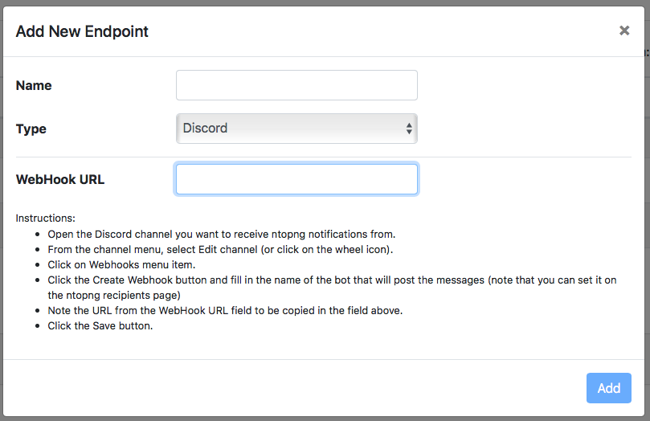
В веб-перехватчике нажмите кнопку «Копировать URL-адрес веб-перехватчика», чтобы скопировать URL-адрес в буфер обмена. После этого мы готовы создать конечную точку ntopng Discord. В интерфейсе системы (верхняя строка меню, раскрывающееся меню) выберите «Уведомления» -> «Конечные точки» и щелкните значок «+». Откроется новое диалоговое окно: выберите Discord в меню типа конечной точки и вставьте URL-адрес веб-перехватчика, который вы ранее скопировали в буфер обмена, выберите понравившееся имя конечной точки и сохраните его.
После этого вы можете создать получателя для этой конечной точки. При желании вы можете указать имя пользователя на странице получателя, которое используется при доставке сообщений в Discord. Если вы не задали имя пользователя, будет использоваться то, которое используется на странице Discord Webhook (обычно установлено значение «Капитан Крюк»).
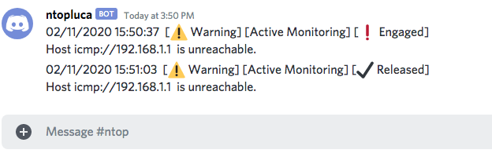
На рисунке выше показаны примеры оповещений, доставленных на сервер Discord.
Elasticsearch
Этот получатель предназначен для отправки оповещений на Elasticsearch.
Примечание
Получатель Elasticsearch доступен только в ntopng Enterprise M или выше.
Конечная точка требует указания URL-адреса Elasticsearch вместе с (необязательными) параметрами аутентификации.

Elasticsearch Конечная точка
Затем с конечной точкой Elasticsearch можно связать несколько получателей. Любой получатель может использовать другой префикс для имен индексов.

Elasticsearch Получатель
По умолчанию оповещения отправляются на индексы Elasticsearch. alerts-ntopng-<year>.<month>.<day>. Новый индекс создается каждый день. Например, имена индексов, используемые в течение двух дней подряд, 17 и 18 апреля 2020 г., alerts-ntopng-2020-04-17 и alerts-ntopng-2020-04-18. Если в конечной точке указан префикс индекса, то этот префикс используется вместо alerts-ntopng.
Соединение Elasticsearch можно проверить, нажав кнопку «Проверить соединение» в настройках.
Примечание
Для конечной точки оповещения Elasticsearch требуется как минимум версия Elasticsearch 7. Версию можно протестировать, нажав кнопку «Проверить соединение» в настройках.
Оповещения отправляются на Elasticsearch в формате JSON, соответствующем формату ECS (подробнее см. ЭКС). Всегда присутствуют следующие ключи:
@timestamp: дата и время обнаружения оповещения UTC/GMT в формате ISO гггг-ММ-дд’Т’ЧЧ:мм:сс.SSSZ.message: поле сообщения, содержащее сообщение журнала.ecs.version: версия ECS, которой соответствует это событие.event.category: представляет категорию события, одну из {аутентификация, конфигурация, база данных, …}. Список всех доступных типов <https://www.elastic.co/guide/en/ecs/current/ecs-allowed-values-event-category.html>event.created: содержит дату/время первого считывания события в формате ISO гггг-ММ-дд’Т’ЧЧ:мм:сс.SSSZ.event.dataset: имя набора данных.event.kind: предоставляет высокоуровневую информацию о том, какой тип информации содержит событие, один из {тревога, событие, метрика, состояние, конвейер_ошибка, сигнал}.event.module: имя модуля, из которого поступают эти данные.event.risk_score: оценка риска или приоритет события.event.severity: числовой уровень серьезности события в соответствии с источником события.event.severity_label: серьезность события, записанная в удобочитаемом формате, один из {низкий, середина, высокий, критический}.organization.name: название организации.rule.name: имя правила или подписи, генерирующей событие.
Оповещения о потоке иметь следующие дополнительные поля:
source.ip: IP-адрес источника (IPv4 или IPv6).source.port: порт источника.source.as.number: уникальный номер, присвоенный автономной системе. Номер автономной системы (ASN) однозначно идентифицирует каждую сеть в Интернете.source.geo.city_name: геолокализация источника, название города (при наличии).source.geo.continent_name: геолокализация источника, название континента (при наличии).source.geo.country_name: геолокализация источника, название страны (при наличии).source.geo.country_iso_code: геолокализация источника, ISO-код страны (при наличии).source.geo.location.lat: широта источника.source.geo.location.lon: долгота источника.network.community_id: хэш IP-адресов и портов источника и назначения, а также протокол, используемый при обмене данными. Это независимый от инструмента стандарт для идентификации потоков.network.protocol: L7 Имя сетевого протокола. бывший. http, лесоруб, tls.network.transport: L4 Имя сетевого протокола. бывший. tcp, udp.network.vlan.id: VLAN Идентификатор.destination.ip: IP-адрес пункта назначения (IPv4 или IPv6).destination.port: порт назначения.destination.as.number: уникальный номер, присвоенный автономной системе. Номер автономной системы (ASN) однозначно идентифицирует каждую сеть в Интернете.destination.geo.city_name: геолокализация пункта назначения, название города (при наличии).destination.geo.continent_name: геолокализация пункта назначения, название континента (при наличии).destination.geo.country_name: геолокализация пункта назначения, название страны (при наличии).destination.geo.country_iso_code: геолокализация пункта назначения, ISO-код страны (при наличии).destination.geo.location.lat: широта пункта назначения.destination.geo.location.lon: долгота пункта назначения.
json_format = {
"organization": {
"name": "ntop"
},
"rule": {
"name": "Low Goodput Ratio"
},
"ecs": {
"version": "1.6.0"
},
"event": {
"severity_label": "low",
"created": "2020-11-23T14:20:56.0Z",
"category": "network",
"module": "ntopng",
"kind": "alert",
"severity": 3,
"dataset": "alerts",
"risk_score": 10
},
"source": {
"port": 60952,
"ip": "192.168.1.29"
},
"destination": {
"geo": {
"continent_name": "NA",
"country_iso_code": "US"
},
"ip": "23.206.251.35",
"as": {
"number": 16625
},
"port": 80
},
"network": {
"community_id": "1:fUGQhJ6nxu/LILCAW+Lb8dF4sKU=",
"transport": "tcp",
"protocol": "http"
},
"message": "{\"cli_os\":\"Intel Mac OS X 10_13_6\",\"cli_continent_name\":\"\",\"flow_status\":12,\"cli_blacklisted\":false,\"alert_entity\":4,\"alert_entity_val\":\"flow\",\"proto.ndpi\":\"HTTP\",\"srv_localhost\":false,\"proto\":6,\"alert_tstamp\":1606141256,\"cli_addr\":\"192.168.1.29\",\"srv_addr\":\"23.206.251.35\",\"srv2cli_packets\":5,\"alert_severity\":3,\"srv_continent_name\":\"NA\",\"srv_os\":\"\",\"srv_asn\":16625,\"community_id\":\"1:fUGQhJ6nxu/LILCAW+Lb8dF4sKU=\",\"first_seen\":1606141240,\"score\":10,\"action\":\"store\",\"cli_localhost\":true,\"cli_port\":60952,\"cli_city_name\":\"\",\"srv2cli_bytes\":558,\"is_flow_alert\":true,\"alert_type\":72,\"cli2srv_bytes\":681,\"alert_json\":\"{\"info\":\"ocsp.int-x3.letsencrypt.org/MFgwVqADAgEAME8wTTBLMAkGBSsOAwIaBQAEFH7maudymrP8%2BKIgZGwWoS1gcQhdBBSoSmpjBH3duubRObemRWXv86jsoQISAz5JqGV%2B4ao1EMKq6MZy01gX\",\"status_info\":\"{\"goodput_ratio\":39.790153503418,\"ntopng.key\":3631703348,\"alert_generation\":{\"subdir\":\"flow\",\"script_key\":\"low_goodput\",\"confset_id\":0},\"hash_entry_id\":8210}\"}\",\"cli_country_name\":\"\",\"cli2srv_packets\":6,\"srv_country_name\":\"US\",\"cli_asn\":0,\"srv_port\":80,\"srv_city_name\":\"\",\"l7_master_proto\":7,\"ifid\":0,\"srv_blacklisted\":false,\"vlan_id\":0,\"l7_proto\":7}",
"@timestamp": "2020-11-23T14:20:56.0Z"
}
Электронная почта
Можно создать конечную точку электронной почты следующим образом

Конфигурация конечной точки электронной почты
Затем можно создать несколько получателей электронной почты, использующих один и тот же адрес. конечная точка, но каждая из них имеет другой адрес электронной почты назначения:
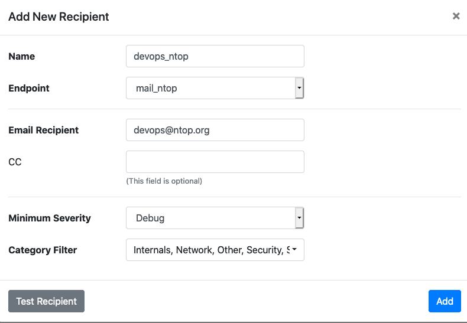
Конфигурация получателя электронной почты
Примечание
Если TLS Шифрование является обязательным (поэтому уведомления всегда должны отправляться в зашифрованном виде), используйте: smtps://youremail.org.
Добавление букв «s» после smtp, ntopng обеспечит принудительное шифрование сообщения. Также в случае, если это так, опция STARTSSL будет проигнорирована
Фэйл2Бан
Первым делом установите Fail2Ban, для получения информации о проверке загрузки Фэйл2Бан. После этого вы сможете увидеть конечную точку Fail2Ban.
После создания конечной точки создайте нового получателя для связи с только что созданной новой конечной точкой и поместите в параметр JAIL JAIL, который будет использоваться для запрета опасного IP-адреса (чтобы получить дополнительную информацию о проверке JAIL). здесь).

Примечание
Если проверка получателя не прошла успешно, убедитесь, что ntopng имеет привилегии sudo и что добавленный JAIL правильный.
Конечная точка Fail2Ban не будет вызываться для каждого оповещения, а только для тех, которые его поддерживают, в конкретном случае только для тех, у которых доступен атакующий; проверьте конкретный раздел руководства пользователя для получения дополнительной информации Сводка оповещений.
самое важное
самое важное — это автономный онлайн-чат с открытым исходным кодом, разработанный как внутренний чат для организаций и компаний.
После создания конечной точки создайте нового получателя с только что созданной новой конечной точкой и поместите в него идентификатор действительного наиболее важного канала.

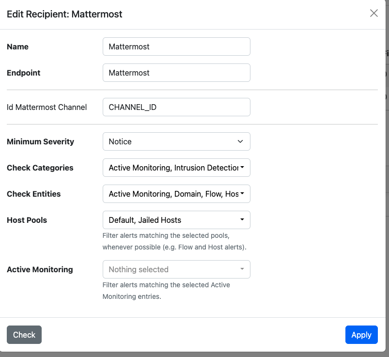
Примечание
Если проверка получателя не прошла успешно, убедитесь, что ntopng имеет привилегии sudo и что добавленный URL-адрес Mattermost и протокол/порт верны.
Mattermost будет вызываться для всех оповещений, соответствующих критериям, указанным в конфигурации получателя.
МС команды
Как и в случае с веб-перехватчиком, конечную точку Microsoft Teams можно использовать для доставки информации о предупреждениях в канал MS Teams, настроив соединитель в MS Teams и URL-адрес в ntopng. Информация о предупреждениях предоставляется командам MS в карточке сообщения (формат JSON для конкретных команд MS) посредством запросов POST.
Чтобы настроить MS Teams для использования ntopng в качестве конечной точки, сначала необходимо включить выбранный соединитель канала. Зайдите в настройки канала и нажмите на Разъемы. Добавлять Входящий вебхук в соединители MS Teams, а затем нажмите Настроить а затем дальше Создавать. Возьмите URL-адрес, предоставленный MS Teams, и вставьте его в конечную точку ntopng (Разъем).
Официальное руководство по MS Teams Webhook можно найти. Здесь
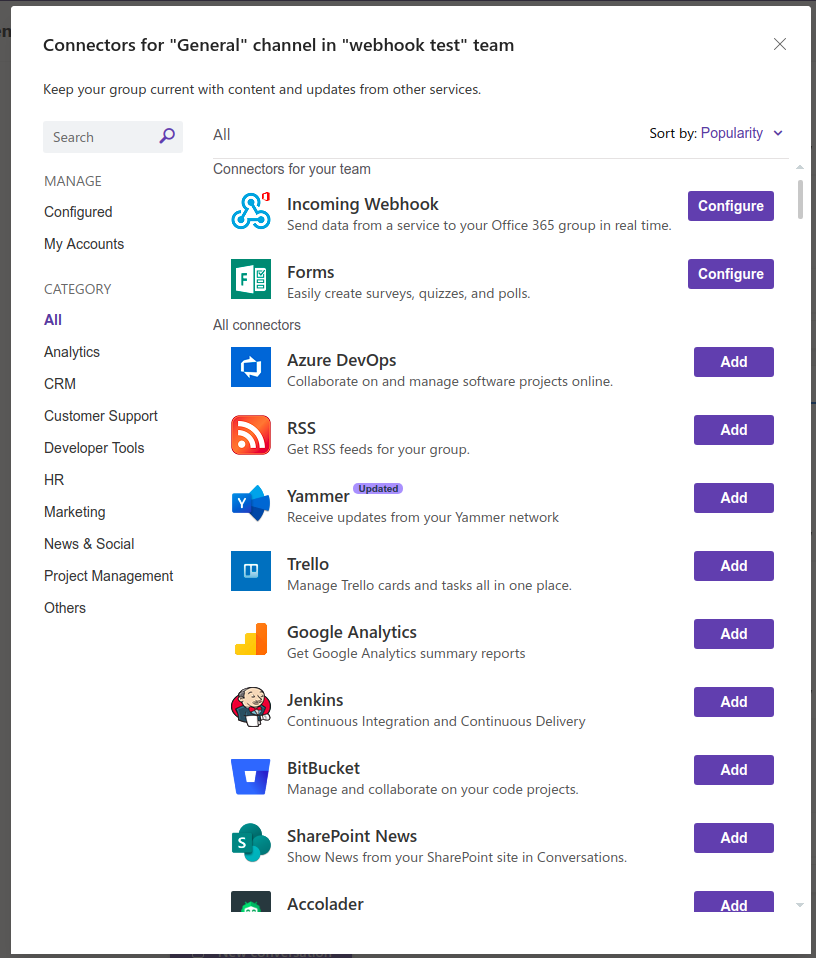
Примечание
Получатель MS Teams доступен только в версии ntopng Enterprise L или выше.
ПейджерДьюти
Прежде всего создайте учетную запись PagerDuty. Для получения информации об учетной записи PagerDuty перейдите по следующей ссылке: ПейджерДьюти. После этого вы сможете увидеть конечную точку PagerDuty.

Необходимо указать Ключ интеграции известный также как маршрутизация_ключ.
Чтобы получить ключ интеграции, после входа в PagerDuty необходимо создать новую интеграцию на панели «Автоматизация».
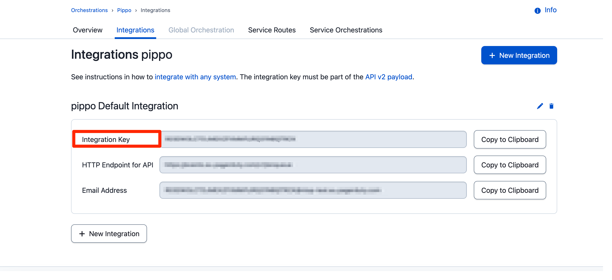
После создания новой интеграции у пользователя будет ключ интеграции, необходимый для конечной точки ntopng.
После создания конечной точки перейдите к созданию нового получателя, который будет связан с вновь созданной конечной точкой.
Примечание
Получатель PagerDuty доступен только в версии ntopng Enterprise L или выше.
Сценарий оболочки
Создайте сценарий, который вы хотите выполнять каждый раз при срабатывании оповещения, и поместите его в каталог. /usr/share/ntopng/scripts/shell/.
Примечание
Сценарий должен представлять собой сценарий оболочки (расширение .sh) с разрешением на выполнение.
Полная информация о предупреждениях передается сценарию через стандартный ввод в формате JSON.
Необходимо создать новую конечную точку, выбрав созданный сценарий.
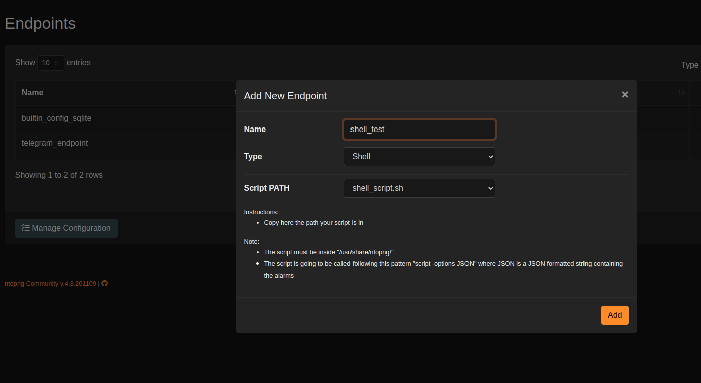
После этого следует создать нового получателя, связанного с только что созданной новой конечной точкой.
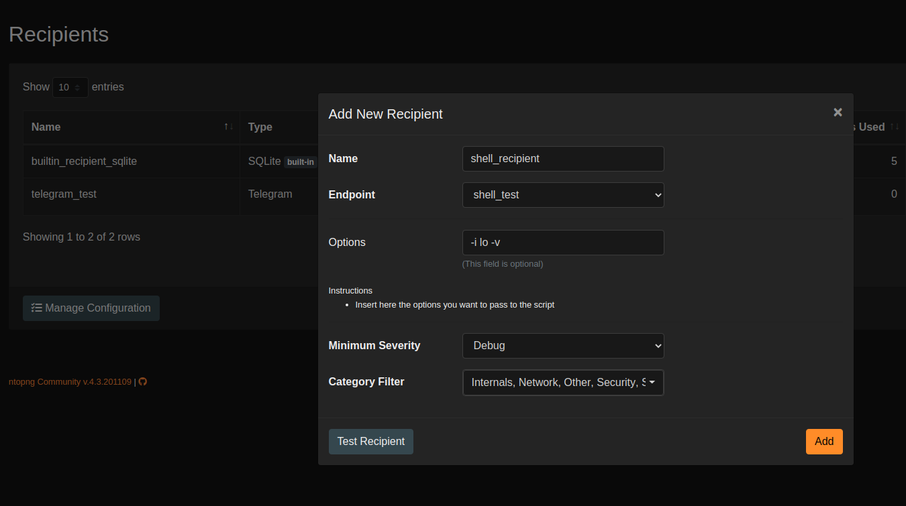
Пример простого сценария оболочки, считывающего информацию о предупреждении со стандартного ввода и записывающего ее в файл:
#!/bin/bash
cat - >> /tmp/shell-script.log
Слабый
Слабый — это IRC-подобная платформа делового общения, которую ntopng может использовать для доставки оповещений. Чтобы доставлять оповещения на слабый канал, вам необходимо:
Создайте новый канал, который будет использоваться для уведомлений.
Создайте новое приложение Slack из Здесь
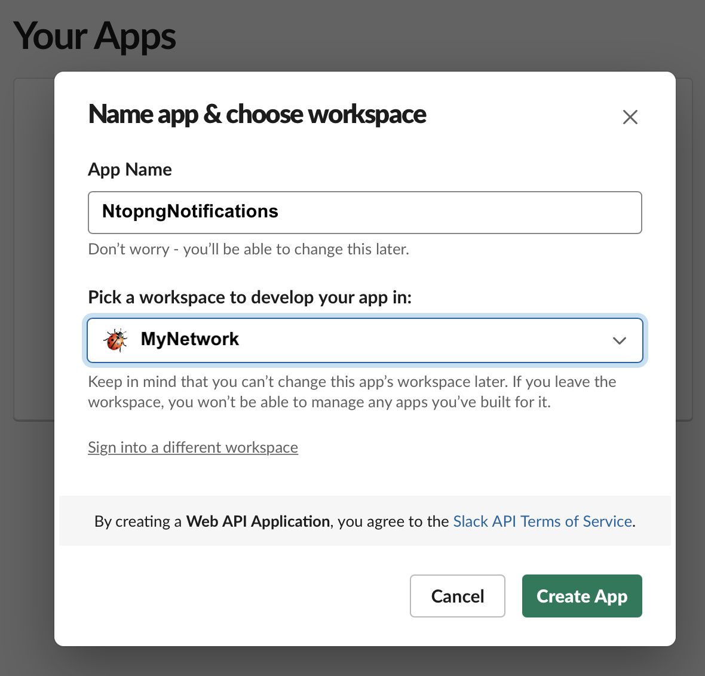
После создания приложения Slack выберите «Входящие веб-перехватчики».

Активировать входящие вебхуки
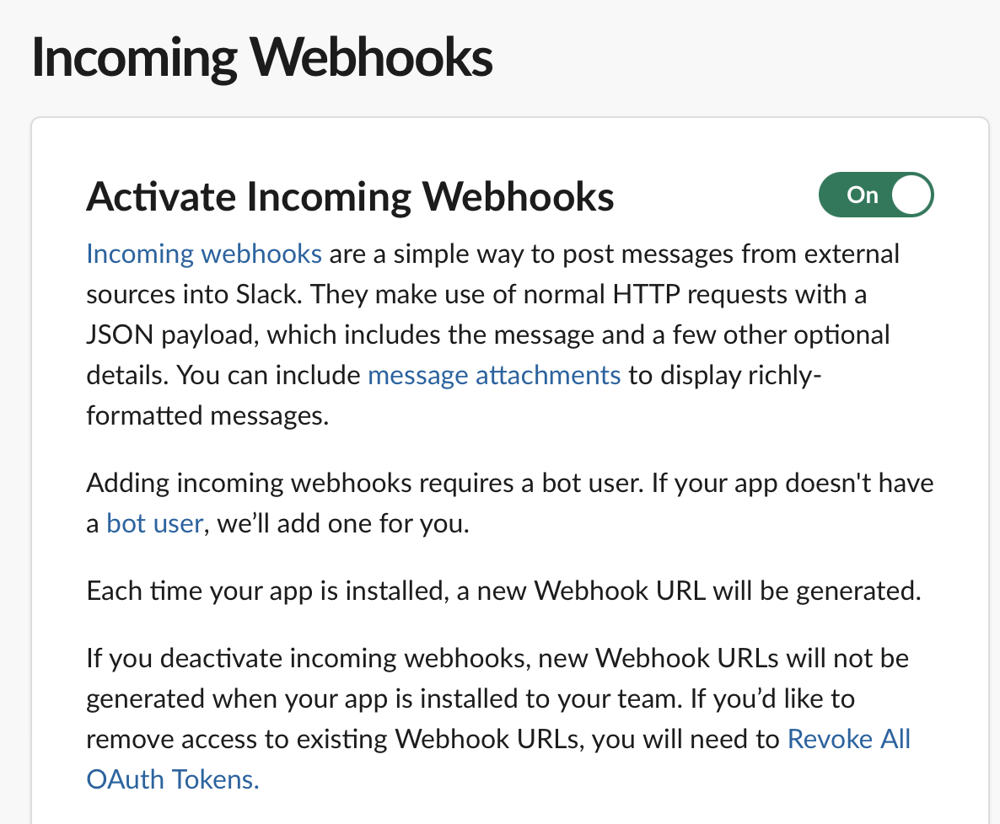
Внизу страницы добавьте новый вебхук, выбрав ранее созданный вами канал для уведомлений.
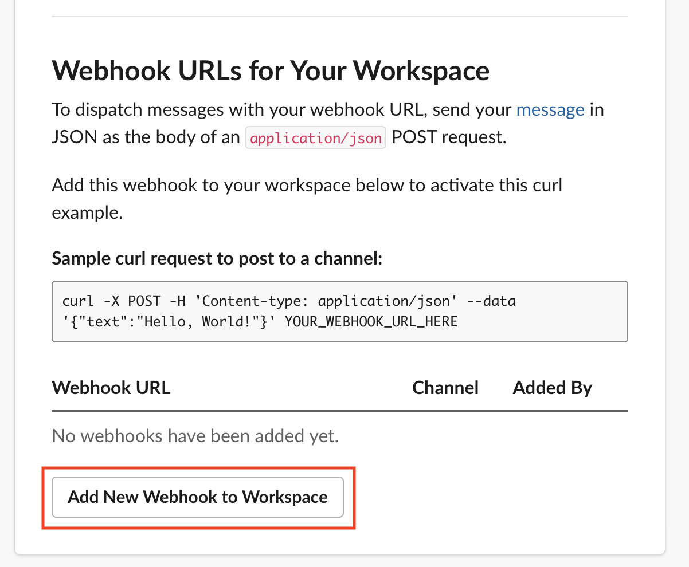
Скопируйте URL-адрес веб-перехватчика в поле Веб-перехватчик уведомлений в ntopng.

Syslog
Оповещения отправляются на адрес syslog с использованием стандартных уровней серьезности syslog согласно RFC 5424.
Примечание
Из ntopng 7.1.260919 можно добавить несколько конечных точек syslog (ранее это было ограничено только 1 конечной точкой syslog)
Серьезность предупреждений ntopng сопоставлена со стандартными уровнями серьезности syslog следующим образом:
Информация становится syslog
LOG_INFOравно целому числу 6Предупреждение становится syslog
LOG_WARNINGравно целому числу 4Ошибка становится syslog
LOG_ERRравно целому числу 3
При отправке оповещений на syslog доступно несколько форматов: текст (открытый текст), JSON (Raw), ECS, Checkmk, CEF. Формат по умолчанию — текстовый, его можно изменить на странице настроек ntopng.
Текст
Предупреждения в виде открытого текста имеют следующий формат:
[tstamp][severity][type][entity][entity value][action] ... and a plain text message...
Поля имеют следующее значение:
[tstamp]— это время, когда ntopng обнаружил предупреждение. На этот раз не обязательно равен моменту, когда предупреждение достигло syslog.[severity]— это серьезность предупреждения. Серьезность также используется при отправке сообщений на syslog. Серьезность: «Предупреждение», «Ошибка» или «Информация».[type]— строка, указывающая тип оповещения.[entity]это класс, который классифицирует создателя оповещение. Это может быть «хост», «интерфейс» и так далее.[entity value]это идентификатор, который однозначно идентифицирует возбудитель вместе с[entity]. Например, сущность значением для «хоста» является его IP-адрес, для «интерфейса» — его имя, для «устройства» — это его MAC-адрес и так далее.[action]указывает, является ли это оповещением о занятии, оповещение, которое было выпущено, или это просто оповещение, которое необходимо сохранить.
Типы оповещений, объекты и действия подробно описаны в разделе Оповещения.
Примеры оповещений, отправленных на syslog:
devel ntopng: [<tstamp>][Info][Device Connection][Device][58:40:4E:CE:28:29] The device Apple_CE:28:29 has connected to the network.
devel ntopng: [<tstamp>][Error][Threshold Cross][Interface][iface_0][Engaged] Minute traffic crossed by interface eno1 [1.08 MB > 2 Bytes]
devel ntopng: [<tstamp>][Warning][Remote to Remote Flow][Flow] Remote client and remote server [Flow: 192.168.1.100:138 192.168.1.255:138] [L4 Protocol: UDP]
JSON
Оповещения JSON имеют следующие ключи, общие с оповещениями в виде открытого текста, а именно: [entity], [entity value], [action], [tstamp], [severity] и [type].
Дополнительные ключи:
message: текстовое сообщение с описанием оповещения.ifid: идентификатор контролируемого интерфейса ntopngalert_key: строка, которая для оповещений на основе пороговых значений представляет интервал проверки (например, мин, 5 минут, час) и тип проверяемого порога (например, байты, пакеты).
Примеры оповещений JSON, отправленных на syslog:
develv ntopng: {"entity_value":"ntopng","ifid":1,"action":"store","tstamp":1536245738,"type":"process_notification","entity_type":"host","message":"[<tstamp>]][Process] Stopped ntopng v.3.7.180906 (CentOS Linux release 7.5.1804 (Core) ) [pid: 4783][options: --interface \"eno1\" --interface \"lo\" --dump-flows \"[hidden]\" --https-port \"4433\" --dont-change-user ]","severity":"info"}
devel ntopng: {"message":"[<tstamp>][Threshold Cross][Engaged] Minute traffic crossed by interface eno1 [891.58 KB > 1 Byte]","entity_value":"iface_0","ifid":0,"alert_key":"min_bytes","tstamp":1536247320,"type":"threshold_cross","action":"engage","severity":"error","entity_type":"interface"}
Checkmk
Этот формат используется для отслеживания событий ntopng в пределах checkmk.
Чтобы экспортировать оповещения в Checkmk, хост, порт и протокол Checkmk должны быть настроены в конфигурации конечной точки syslog в ntopng.
Пожалуйста, проверьте Настройка консоли событий раздел документации Checkmk для настройки приема syslog в Checkmk. Обычно для этого требуется включить надстройку syslog с помощью инструмента omd и добавить фильтр для оповещений ntopng в разделе Настройка -> Консоль событий.
После этого оповещения, экспортированные ntopng, должны появиться под Монитор -> События в Checkmk.
Оповещения, экспортированные в формате Checkmk, имеют следующий формат:
Поля имеют следующие значения:
sl: идентификатор события, используемый, например, для выполнения поиска.comment: содержит информацию, описанную в разделе «Открытый текст», за исключением метки времени, которая присваивается событию с помощью checkmk.severity: серьезность предупреждения.
Пример оповещения, отправленного на syslog в формате Checkmk:
devel ntopng: [Checkmk@18662 sl="4" comment=" (Interface: enp0s3) (Severity: Warning) (Flow) (Binary file/data transfer (attempt)) (vbox:43972 -> it.archive.ubuntu.com:80) Binary file/data transfer (attempt)" severity="Warning"] Binary file/data transfer (attempt)
Значения уровня обслуживания необходимо вручную сопоставить внутри Checkmk в разделе Настройка -> Глобальные настройки > Уведомления > Уровни обслуживания..
Конечный результат должен выглядеть так, как показано на изображении ниже.

CEF (общий формат событий) для SIEM
ntopng может экспортировать свои оповещения в SIEM (информация о безопасности и управление событиями) в формате общих событий (CEF) через syslog. CEF понимается Splunk, ArcSight, Microsoft Sentinel, IBM QRadar, Elastic и большинством других SIEM и платформ управления журналами. поэтому предупреждения сети и безопасности, обнаруженные ntopng, могут быть коррелированы с событиями rest инфраструктуры. Для этой функции требуется лицензия Enterprise XL.
Чтобы экспортировать оповещения в SIEM, создайте Syslog конечная точка, установите Формат к CEF (общий формат событий для SIEM)и установите хост, порт и протокол (UDP или TCP) на котором SIEM получает syslog. Затем создайте получателя для конечной точки. Как и для любого другого получателя, Минимальная серьезность и другой критерии доставки можно использовать для отправки только интересующих оповещений, а не всех оповещений.
Примечание
Получатель, использующий формат CEF, может отправлять только оповещения. Отчеты и другие типы уведомлений недоступны.
Экспортируются все типы оповещений (поток, хост, сеть, интерфейс, устройство SNMP, MAC, пользователь, активный мониторинг, AS и системные оповещения). Каждое оповещение отправляется как сообщение syslog, содержащее событие CEF:
CEF:0|ntop|ntopng|Version|Alert id|Alert name|Severity|key=value key=value ...
Поля заголовка:
Version: версия ntopng.Alert id: числовой идентификатор типа оповещения. Один и тот же идентификатор используется разными объектами, поэтому тип оповещения идентифицируется вместе с объектом (ntopEntity) или поntopAlertKeyполе.Alert name: например, читаемое имя оповещения. Низкий коэффициент полезного использования.Severity: число от 0 до 10, рассчитанное на основе оценки оповещения.
После заголовка идет список key=value поля. Основными из них являются следующие:
Поле |
Описание |
|---|---|
|
Время начала и окончания оповещения в миллисекундах с начала эпохи. |
|
IP-адрес и порт источника (клиента). |
|
IP-адрес и порт назначения (сервера). |
|
Имена хостов источника и назначения, известные как ntopng. |
|
Транспортный протокол (TCP, UDP…) и протокол приложения (nDPI). |
|
Байты от сервера к клиенту и от клиента к серверу. |
|
Описание оповещения, как показано на странице оповещений ntopng. |
|
Имя оповещения. |
|
Имя интерфейса ntopng, сгенерировавшего предупреждение. |
|
Имя, присвоенное сети клиента и сервера (оповещения о потоке). Оповещения хоста используют ntopNetwork. |
|
Текст, определяющий тип оповещения, например alert_flow_low_goodput. |
Оповещения, не относящиеся к потокам, относятся к одному объекту, поэтому у них разные поля. Например, оповещения устройства SNMP имеют dvc (адрес устройства)
и dvchost (имя устройства), оповещения MAC имеют smac, а оповещения пользователей имеют suser.
Вся остальная информация об оповещении, которую имеет ntopng (автономная система, геолокация, черные списки, флаги злоумышленника и жертвы, риски потока, сведения, специфичные для типа оповещения и т. д.).
отправляется в виде дополнительных полей, имя которых начинается с ntop за которым следует имя поля, например ntopCliAsn. Поля без значений не отправляются.
Спланк
ntopng оповещения в формате CEF индексируются Splunk, их можно искать, отображать в виде диаграмм и использовать в информационных панелях и оповещениях Splunk, как и события любого другого источника данных SIEM.

ntopng оповещений, полученных в Splunk в формате CEF.
При раскрытии события все поля оповещения становятся доступными и могут использоваться в поиске, на информационных панелях и в оповещениях Splunk.

Поля оповещения ntopng в Splunk
Telegram
Прежде всего перейдите из Интернета GUI в раздел «Уведомление->Конечные точки»; после этого нажмите на кнопку + в правом углу окна конечной точки, таким образом будет добавлена новая конечная точка для системы уведомлений. Выберите внутри Тип окно Telegram. Затем откройте Telegram, найдите @BotFather и начать с него новое преобразование.

- После этого отправьте следующие сообщения в следующем порядке:
/newbotbot_name(имя, которое будет иметь бот, например. ntopng_telegram_скрипт)bot_username(имя пользователя, у которого будет бот, например. ntopng_telegram_script_bot)

Теперь @BotFather предоставит токен, который позволит ntopng общаться с фактически созданным ботом; скопируйте этот токен и вставьте его в Добавить новую конечную точку в окне ntopng, открытом ранее, назовите конечную точку (например, telegram_конечная точка) и нажмите Добавлять.
После этого перейдите в «Уведомление->Получатели» и, как и раньше, нажмите кнопку + в правом верхнем углу окна получателя. Теперь выберите раздел «Конечная точка» Добавить нового получателя ранее созданную конечную точку, назовите ее (например, telegram_recipient_mychat), выберите минимальную серьезность уведомлений и желаемую категорию уведомления.
Затем вернитесь к Telegram. Если боту необходимо лично отправлять сигналы тревоги прямо в приватный чат, выполните следующие действия:
начать разговор с ботом ntopng в Telegram (бот не может инициировать разговор с пользователем!)
искать @getidsbot и начать с ним разговор
скопируйте идентификатор @getidsbot дал тебе
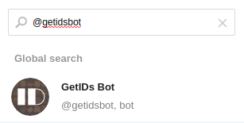

- В противном случае, если вы хотите добавить бота в групповой чат и отправлять сообщения в эту группу, выполните следующие действия:
добавьте бота, которого вы ранее создали (ищите его имя), в свой групповой чат
позвони на REST API: https://api.telegram.org/bot<botToken>/getUpdates чтобы узнать идентификатор группового чата
скопируйте идентификатор, который вам дал ответ REST
Теперь вставьте идентификатор в Добавить нового получателя окно ntopng и нажмите Добавлять (нажмите Тестовый получатель чтобы проверить, правильно ли работает бот).
Теперь добавьте в относительный пул получателя Telegram, которого вы только что создали, и все готово!
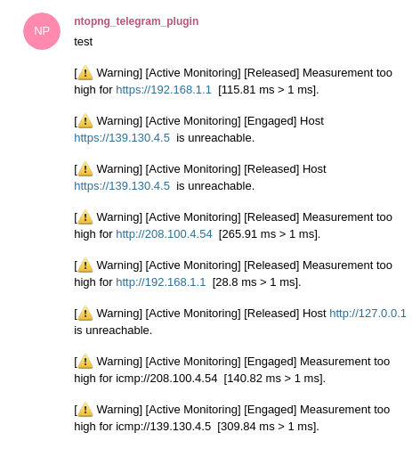
Вебхук
Веб-перехватчики можно использовать для доставки информации о предупреждениях в конечную точку HTTP, настроив URL-адрес в ntopng. Информация оповещений предоставляется веб-перехватчику в формате JSON посредством запросов POST.
Общий секрет можно настроить в ntopng, который представляет собой произвольную строку, включенную во все сообщения JSON.
Имя пользователя и пароль также можно использовать для использования базовой аутентификации HTTP.
Вичат
WeChat можно использовать для доставки оповещений на конечную точку WeChat HTTP, настроив URL-адрес в ntopng.
Чтобы получить действительный URL-адрес WebHook WeChat, пользователь должен зарегистрироваться на Вичат. После этого необходимо создать групповой чат и добавить туда группу robot, чтобы получить URL WebHook группы robot. Для получения дополнительной информации проверьте здесь.
Информация оповещений предоставляется веб-перехватчику в формате JSON посредством запросов POST.

Улей
Прежде всего установите TheHive. Информацию о загрузке и установке можно найти по следующей ссылке: Улей. После этого вы сможете увидеть конечную точку TheHive.

- Необходимо указать следующее:
URL-адрес сервера вашего TheHive.
Ключ API для пользователя с профилем «manageAlert/create».
наблюдаемый URL-адрес;
наблюдаемый адрес электронной почты.
После создания конечной точки перейдите к созданию нового получателя, который будет связан с вновь созданной конечной точкой.
Примечание
Получатель TheHive доступен только в ntopng Enterprise M или выше.